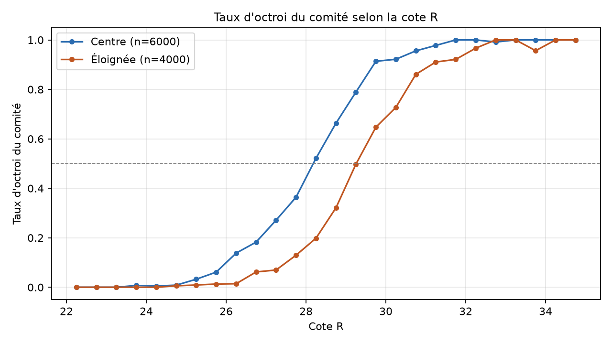
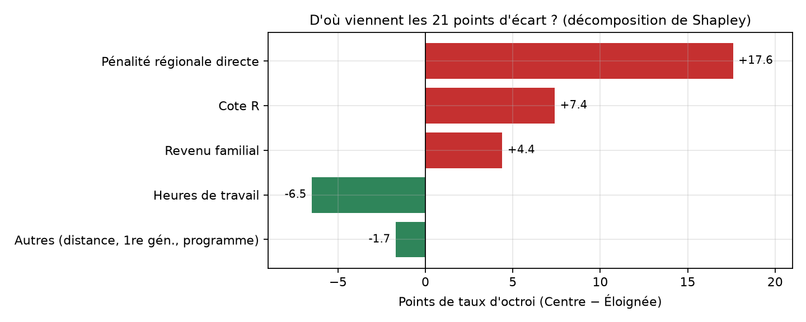
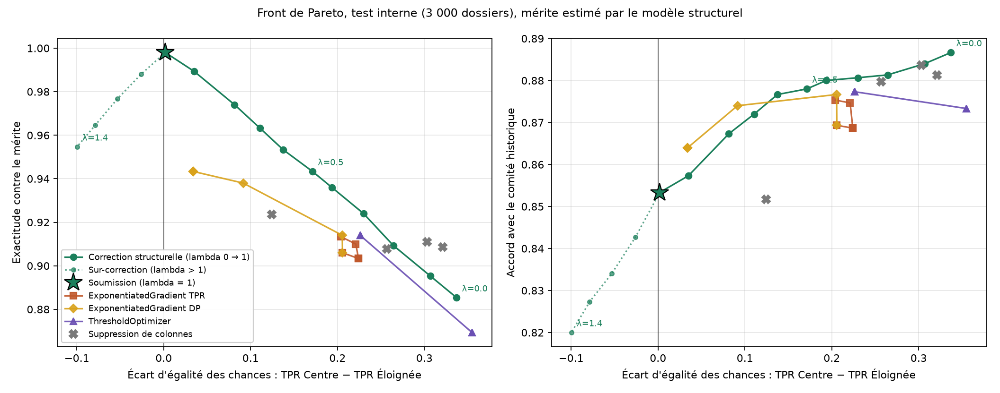

Diagnostic du biais, correction structurelle et plan de surveillance pour un modèle d'octroi de bourses et de prêts étudiants.

Pour avoir 50 % de chances, il faut 1,2 point de cote R de plus en région éloignée. Ratio d'impact : 0,56, sous le seuil de 0,8.

Capacité à prédire la région (AUC) : code postal 1,00 · distance 0,998 · heures 0,81 · revenu 0,69.
| Effet de 220 km | avec région | sans région |
|---|---|---|
| Distance (logit) | +0,24 | −1,08 |
Quand on retire la région, la pénalité se déplace dans la distance.
| Écart de TPR du modèle de production | |
|---|---|
contre decision_octroi | 0,06 |
| contre le mérite estimé | 0,32 |
Égaliser le TPR sur des étiquettes biaisées revient à reproduire le comité. C'est pourquoi ThresholdOptimizer et ExponentiatedGradient (TPR) ne corrigent presque rien.
On modélise le comité avec l'indicatrice de région, pour qu'elle absorbe la pénalité au lieu de la laisser fuir dans les proxys.
On conserve la cote R et les heures. On retire la région, le revenu (favoritisme et proxy) et la distance.
Un seul seuil pour tous : les 40 % meilleurs scores. Le score ne lit jamais la région.
Métrique retenue : l'égalité des chances. Le préjudice à éviter est de refuser un étudiant méritant à cause de son code postal. Contrairement à la parité démographique, elle respecte les différences réelles de mérite.

λ = part du biais retirée (0 = comité, 1 = mérite, > 1 = sur-correction). Validation semi-synthétique, où le vrai mérite est connu : 99,3 % d'exactitude et écart de 0,009 pour notre méthode, contre 95,2 % pour le meilleur outil fairlearn (ExponentiatedGradient, parité démographique).
| Taux d'octroi | Production | Corrigé |
|---|---|---|
| Montréal | 47,1 % | 40,2 % |
| Capitale-Nationale | 46,3 % | 39,7 % |
| Bas-Saint-Laurent | 26,8 % | 38,3 % |
| Côte-Nord | 26,1 % | 39,7 % |
| Gaspésie–Îles-de-la-Madeleine | 29,9 % | 41,5 % |
| Global | 39,0 % | 40,0 % |
| Indicateur | Production | Corrigé |
|---|---|---|
| Écart d'égalité des chances* | 0,295 | 0,000 |
| Écart de parité | 0,190 | 0,000 |
| Ratio d'impact (4/5) | 0,59 | 1,00 |
386 décisions changent sur 4 000 : 200 candidats éloignés gagnent la bourse, 173 candidats du Centre la perdent. Le budget reste à 40 %, dans la plage de 36 à 44 %.
* Contre le mérite estimé. Énoncé : écart de 0,270 du modèle de production, mesuré contre l'étalon du jury.
surveillance.py.equite.py.audit_rapport.ipynb : diagnostic
model_corrige.py : correction et front de Pareto
predictions.csv : 4 000 décisions, 40 %
GOUVERNANCE.md, surveillance.py
Tout se reproduit avec python model_corrige.py